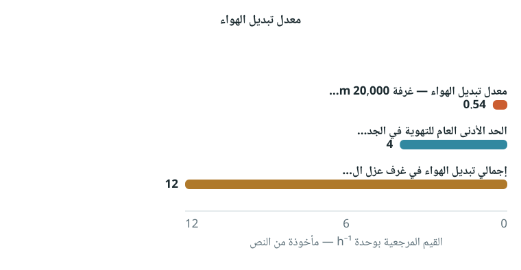

معدل تبديل الهواء
Air Change Rate (ACH)
نسبة التدفّق الحجمي للهواء إلى حجم الفراغ في الساعة؛ مقياس للتهوية لا لواقع استبدال كل الهواء.
معدل تبديل الهواء هو نسبة التدفّق الحجمي إلى حجم الفراغ، ويُعبَّر عنه بعدد مرات تبديل حجم الهواء في الساعة. في الوحدات المترية ACPH = 3600·Q/V حين Q بالمتر المكعب في الثانية وV بالمتر المكعب، وفي الوحدات البريطانية ACPH = 60·Q/V حين Q بالقدم المكعب في الدقيقة. والتعريف لا يعني أن حجم الهواء الابتدائي يُستبدل فعليًّا في كل تبديل اسمي؛ فما يحدث فعلًا يعتمد على كفاءة توزيع الهواء، من الإزاحة التامة إلى قصر الدائرة الذي يمرّر هواء الإمداد إلى العادم قبل أن يختلط. وفي فراغ مختلط اختلاطًا تامًّا بمعدل تهوية ثابت وهواء وارد خالٍ من الملوث ولا مصادر إضافية، تنخفض تراكيز الملوث تناقصًا أُسِّيًّا: dC/dt = −ACH·C ومنه C(t) = C₀e^(−ACH·t)؛ وعند ACH = 1 وساعة واحدة يبقى 36.8% من التركيز الابتدائي، أي انخفاض 63.2%. والمعدل مقياس تدفّق لا مقياس قدرة على إزالة الملوث من موضعه؛ فدراسة CFD لغرفة مريض بيّنت أن مسار الملوث من المريض إلى شبكة العادم أهم من قيمة ACH نفسها، وأن رفع التدفّق من 4 إلى 12 تبديلًا قلّل التعرّض في تخطيط ولم يُقلّله في تخطيط آخر. ولهذا لا يُستخدم ACH وحده أساسًا للتصميم؛ معدلات التهوية السكنية تُحسب بالمساحة وعدد الشاغلين، وغير السكنية بالمساحة والعدد أو بتخفيف ملوث معروف.
كيف تعمل الظاهرة؟
المعدل نسبة بين تدفّق وحجم، فلا يصف توزيع الهواء. حين يكون الهواء مختلطًا اختلاطًا تامًّا يُزيل التدفّق الملوث بمعدل يتناسب مع التركيز القائم، فتنشأ المعادلة التفاضلية dC/dt = −ACH·C التي حلّها أُسّي سالب. وحين لا يكون مختلطًا — إزاحة أو قصر دائرة — يمرّ هواء الإمداد النظيف إلى العادم قبل أن يحتكّ بالملوث، فيقلّ التبديل الفعلي عن الاسمي، ولهذا يُقاس بأثر الملوث أو بغاز التتبّع لا بالتدفّق على الورق.
العلاقة بالأرقام
التحويل الأساسي: ACPH = 3600·Q/V بالمتر المكعب والثانية، أو 60·Q/V بالقدم المكعب والدقيقة. وللتحويل إلى معدل تهوية للفرد Rp = ACPH·D·h/3.6 حين D مساحة الفرد بـm² وh ارتفاع السقف بـm وRp بـL/s للفرد. والحدّان المرجعيان في المصدر: 12 تبديلًا إجماليًّا في غرف عزل العدوى وفق ASHRAE 170، وأقل من 0.6 ACH50 في معيار البيت السلبي. ويساوي 1 m³/h نحو 0.278 L/s.
مفاهيم متقاربة
ACH يقيس مرور الحجم، وeACH يقيس إزالة الملوث بالترشيح، وACH50 يقيس نفاذية الغلاف، وكفاءة تبديل الهواء تقيس جودة الخلط. والأربعة تُقرأ معًا لا بدلًا من بعضها: غرفة بتبديل 12 لكن مسار إمدادها يعبر مسار الملوث قد تكون أسوأ من غرفة بتبديل 6 وتوزيع صحيح.
حدود التطبيق
الحدّ الأول: ACH لا يعرف عدد الشاغلين، فالقيمة نفسها تُعطى لعشرة أو أربعين شخصًا في الفراغ ذاته، ولهذا جاء ASHRAE 241 بحدّ تدفّق نظيف للفرد. الحدّ الثاني: قيم الجداول قواعد تجريبية لا أساس تصميم. الحدّ الثالث: 0.6 ACH50 ليست معدل تهوية تشغيليًّا بل اختبار ضغط عند 50 باسكال يحاكي ريحًا مستمرة نحو 32 km/h، والتسريب الطبيعي في الجو الهادئ أقل بكثير. الحدّ الرابع: حساب ACH يفترض هواءً خارجيًّا نظيفًا، فإن كان الهواء الوارد ملوّثًا لم تُفِد الزيادة.

| الكمية | القيمة | المصدر |
|---|---|---|
| معدل تبديل الهواء — غرفة 20,000 m³ بتدفّق 3 m³/s | 0.54 h⁻¹ | [3] |
| الحد الأدنى العام للتهوية في الجدول التصميمي | 4 h⁻¹ | [2] |
| إجمالي تبديل الهواء في غرف عزل العدوى المنقولة جوًّا | 12 h⁻¹ | [1] |
| الحصة المتبقية من تركيز الملوث بعد ساعة عند تبديل واحد | 36.8 % | [1] |
| حد إحكام الهواء في معيار البيت السلبي | 0.6 ACH50 | [1] |
المصادر
- 1 Air changes per hour — Wikipedia. en.wikipedia.org/wiki/Air_changes_per_hour · اطُّلع عليه 2026-11-28
- 2 Air Change Rate — The Engineering ToolBox. www.engineeringtoolbox.com/air-change-rate-room-d_867.html · اطُّلع عليه 2026-11-28
- 3 Air Change Rates in typical Rooms and Buildings — The Engineering ToolBox. www.engineeringtoolbox.com/air-change-rate-d_882.html · اطُّلع عليه 2026-11-28
استشهد بهذا المصطلح
الصيغتان مبنيتان من بيانات الصفحة نفسها: العنوان والتاريخ ورابط النسخة المنشورة.
معدل تبديل الهواء — Air Change Rate (ACH). (2026). ديوان المعرفة — انفراد. https://infiradev.com/diwan/terms/term-air-change-rate.html
@misc{term-air-change-rate2026,
title = {معدل تبديل الهواء},
titleaddon = {Air Change Rate (ACH)},
howpublished = {{ديوان المعرفة — انفراد} — مرجع علمي عربي},
year = {2026},
url = {https://infiradev.com/diwan/terms/term-air-change-rate.html},
urldate = {2026-11-28},
note = {مراجعة علمية: Abdullah Al-Huwaidi}
}
راجعه: Abdullah Al-Huwaidi · 2026-11-28 · آخر تحديث 2026-11-28